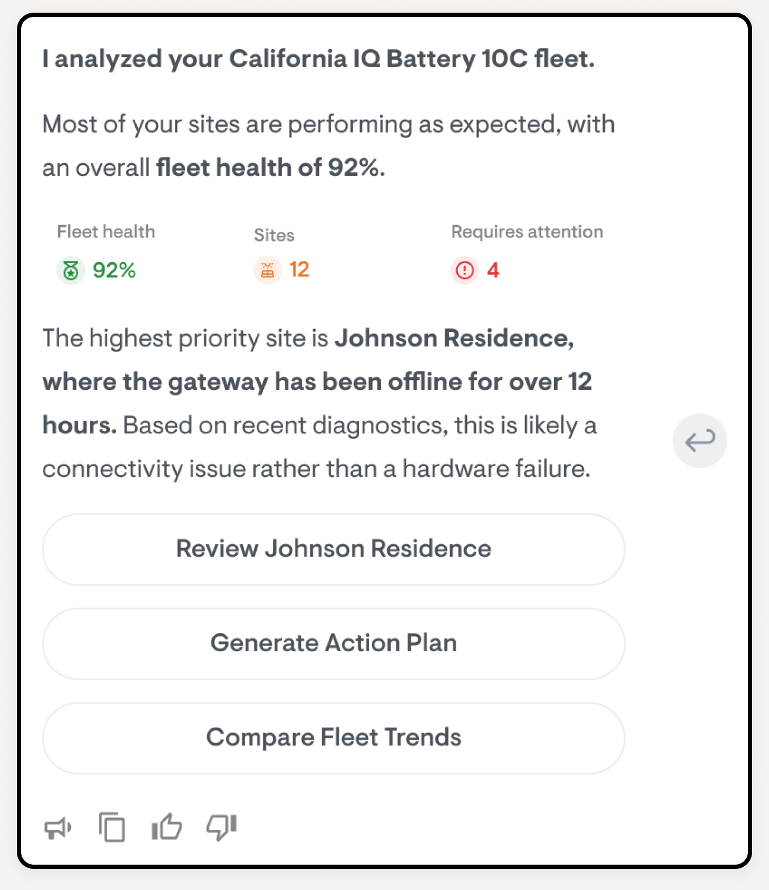
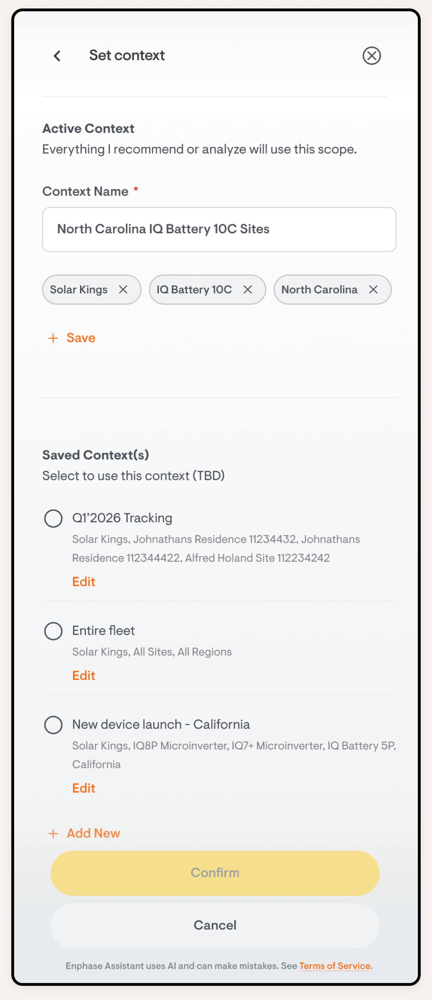
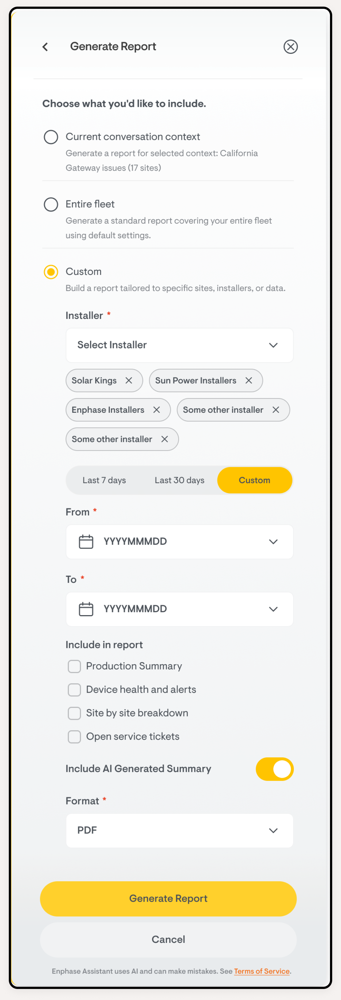
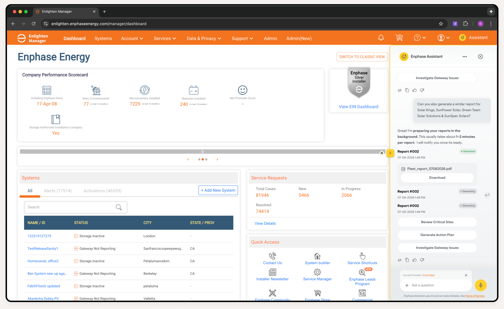
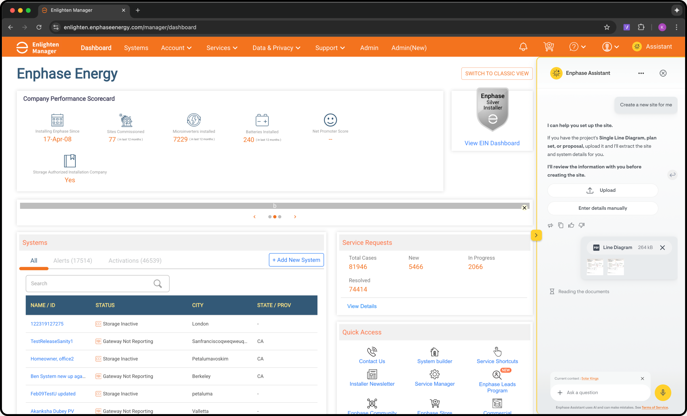
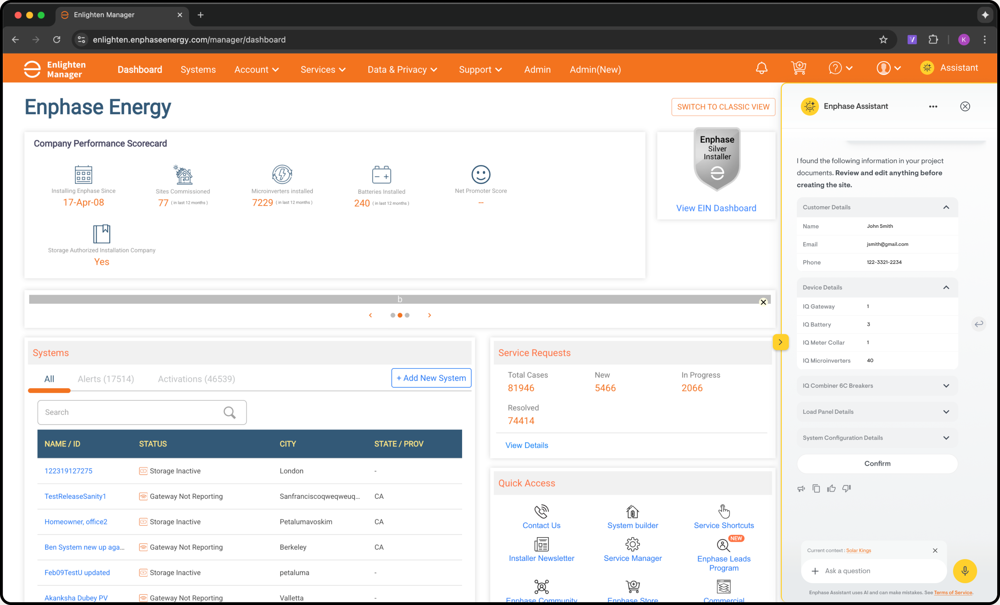
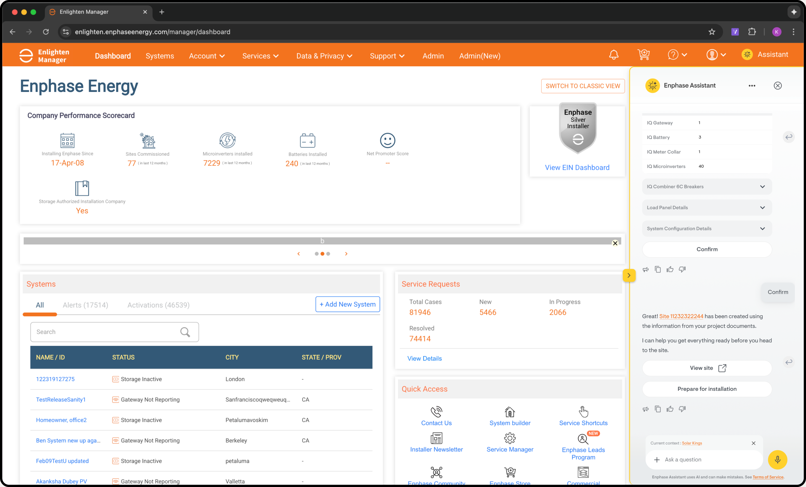
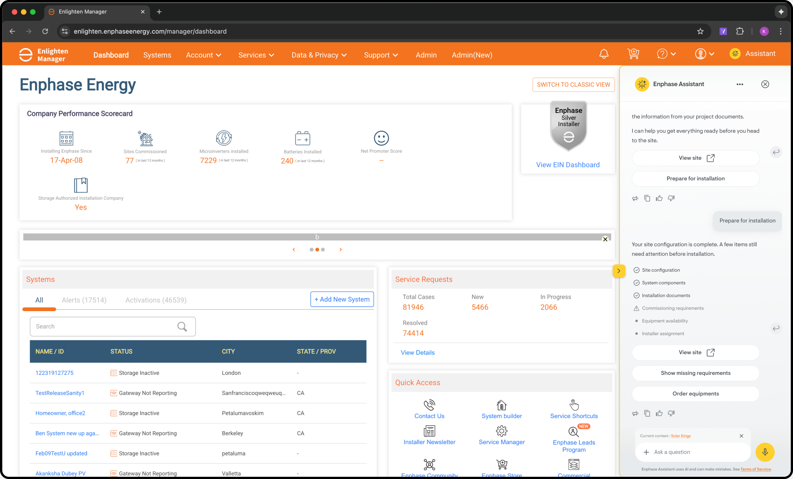
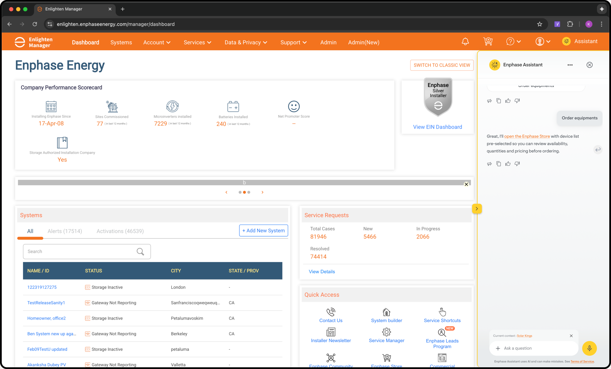

Reimagining Enlighten Manager with AI
The moment Alex opens Enlighten Manager, the AI greets him with a prioritized summary. No more scanning dashboards. Our research showed 6.8% of all support calls are just installers asking "is my site OK?". AI eliminates that call entirely.
In Enlighten Manager, AI is analytical. It summarizes fleets, finds trends, prioritizes work, and generates reports.
Key Features


Site status at a glance


AI Assistant chat
Context-aware conversation with installer history

Quick and easy report download
AI-generated downloadable reports, all with natural language
And this is where the context comes alive

1Installer opens AI assistant2AI asks for project documents3Documents uploaded & processed

4AI extracts site details from SLD5Installer reviews extracted data

6Site created, ready to commission

7Installation checklist generated

8Context carries to next job
From site to store, AI carries context across products.